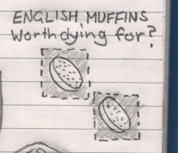

Monday, March the 9th, 2009
back to: title, date or indexes
At the risk of this becoming a muffincentric website, I think it is important that readers are given the fruits of Glyn Webster's tireless—if no doubt tiring—researches into what the OED defines as a small, flat, cake made from yeast batter and cooked on a hotplate, usually eaten split, toasted, and spread with butter, jam, etc., esp. for breakfast or tea. Interestingly, in the dictionary's first citation, from 1703, it is spelled Moofin, and in the second, from 1747, Muffing (capitalisation in the originals). I wonder if it is too late to beat against the tides of history and to reintroduce one or other of these spellings?
Anyway, the only reason I have returned to this possibly inexhaustible topic is that, having apprised himself of the difference between true Moofins and what the rest of the world outside Britain think is a Muffing, Mr Webster has kindly provided these cut-out “patches” or “plug-ins” for your heraldic muffin device. Just print, snip, ‘n’ gum!
